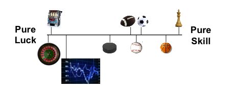
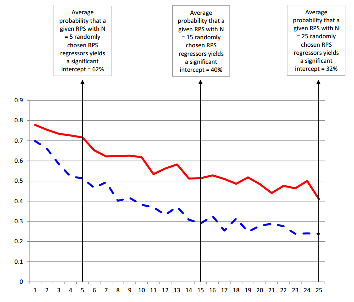
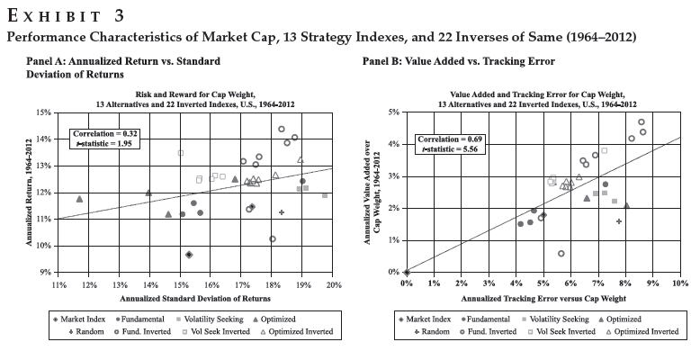
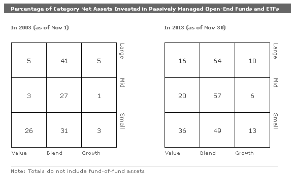
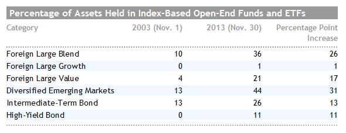
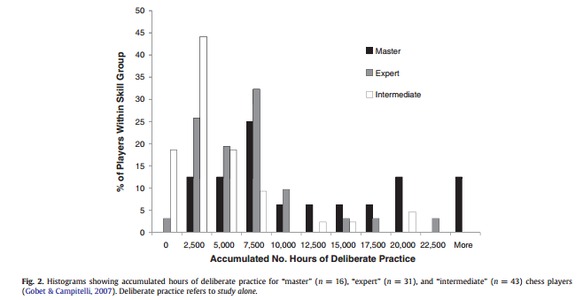

Wealth and Skill
TimelyPortfolio
Why Are You Here?
Forbes 400 (2013) | How They Made Their Money?
Forbes 400 (2013) | How They Made Their Money? | Bar Chart
More About Becoming Ultra-Wealthy
"Wealth mobility, it turns out, requires idiosyncratic risk, concentration, and (nonrecourse) leverage--all factors that MPT seeks to eliminate in a standard diversified portfolio."
A Risk-Based Asset Allocation Framework for Unstable Markets
Ashvin B. Chhabra
CFA Article Collections for Practitioners
October 2013, Vol. 29, No. 4
(doi: 10.2469/cp.v29.n4.1)
Ashvin B. Chhabra
CFA Article Collections for Practitioners
October 2013, Vol. 29, No. 4
(doi: 10.2469/cp.v29.n4.1)
Luck and Skill in Wealth | Wealth Concentration

"In the absence of any redistribution, the distribution of wealth is unstable over time and becomes concentrated entirely at the top. This occurs despite the fact that all households have identical patience and skill."
Instability and Concentration in the Distribution of Wealth (Draft)
Fernholz, R and R Fernholz
Claremont Mckenna College / Intech
December 9, 2103
Fernholz, R and R Fernholz
Claremont Mckenna College / Intech
December 9, 2103
Luck and Skill in Wealth | Skill Continuum

"There are three aspects I will emphasize. The first is related to the number of players...second aspect is sample size...Finally, there's the aspect of how the game is scored."
Luck and Skill Untangled: The Science of Success
Interview with Michael J. Mauboussin
by Samuel Arbesman
Wired, November 16, 2012
Interview with Michael J. Mauboussin
by Samuel Arbesman
Wired, November 16, 2012
Luck and Skill in Wealth | Hope in 330 Signals

"the large number of RPS that we have documented...implies that either U.S. stock markets are pervasively inefficient, or that the number of rationally priced sources of risk in equity returns for theorists to understand and explain is far larger than previously envisaged."
The Supraview of Return Predictive Signals
Green, Jeremiah and Hand, John R. M. and Zhang, Frank
Review of Accounting Studies, Forthcoming
Green, Jeremiah and Hand, John R. M. and Zhang, Frank
Review of Accounting Studies, Forthcoming
Luck and Skill in Wealth | Hope in Blind Monkeys

The Surprising Alpha from Malkiel's Monkey and Upside-Down Strategies
Arnott, Robert D., et al. The Journal of Portfolio Management 39.4 (2013): 91-105.
Arnott, Robert D., et al. The Journal of Portfolio Management 39.4 (2013): 91-105.
Luck and Skill in Wealth | Hope in Passive


Skill | How to Get It?

"But the data indicate that there is an enormous amount of variability in deliberate practice-even in elite performers. One player in Gobet and Campitelli's (2007) chess sample took 26 years of serious involvement in chess to reach a master level, while another player took less than 2 years to reach this level."
Deliberate practice: Is that all it takes to become an expert?
Hambrick, David Z., et al.
Intelligence
Hambrick, David Z., et al.
Intelligence
Accumulated Advice
- Open Source Yourself
- Engage and Find a Mentor or Pair Learn with Peer
- Practice Telling Stories / Produce Content
- Learn to Program/Code
- Fail and Get Used to Being Wrong